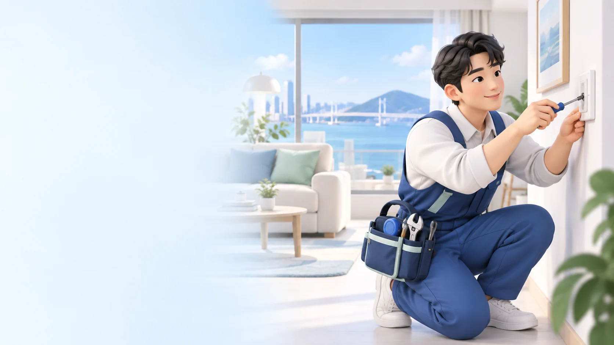
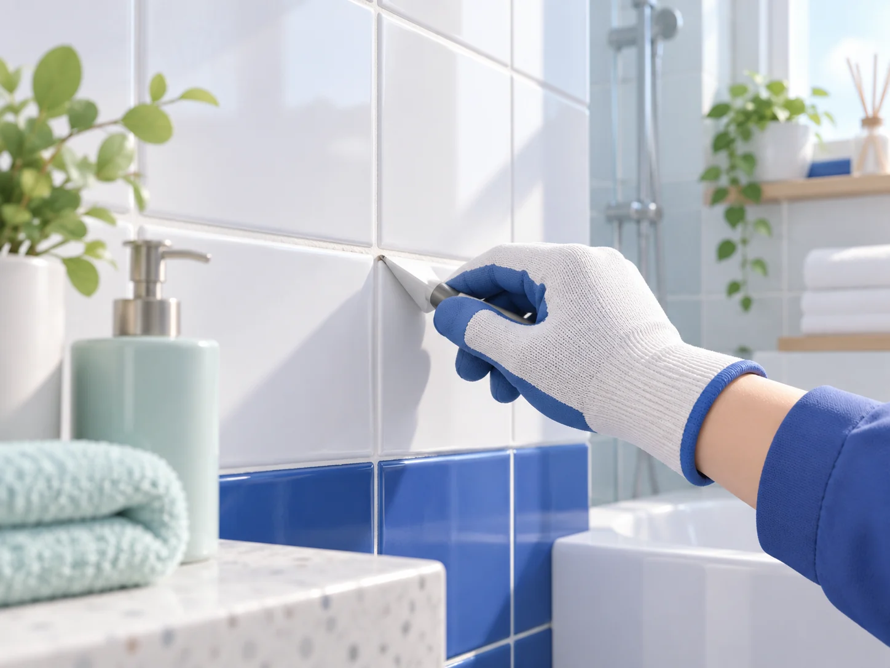
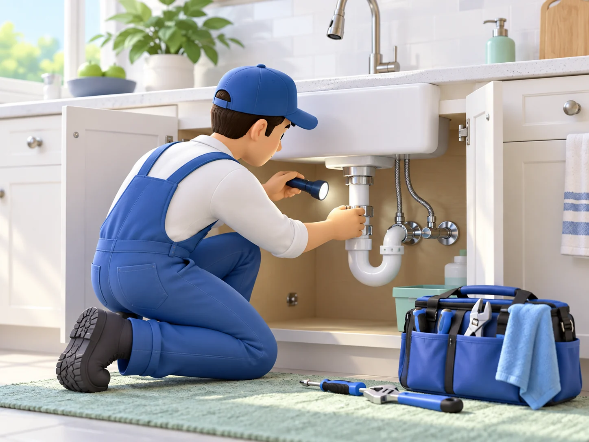
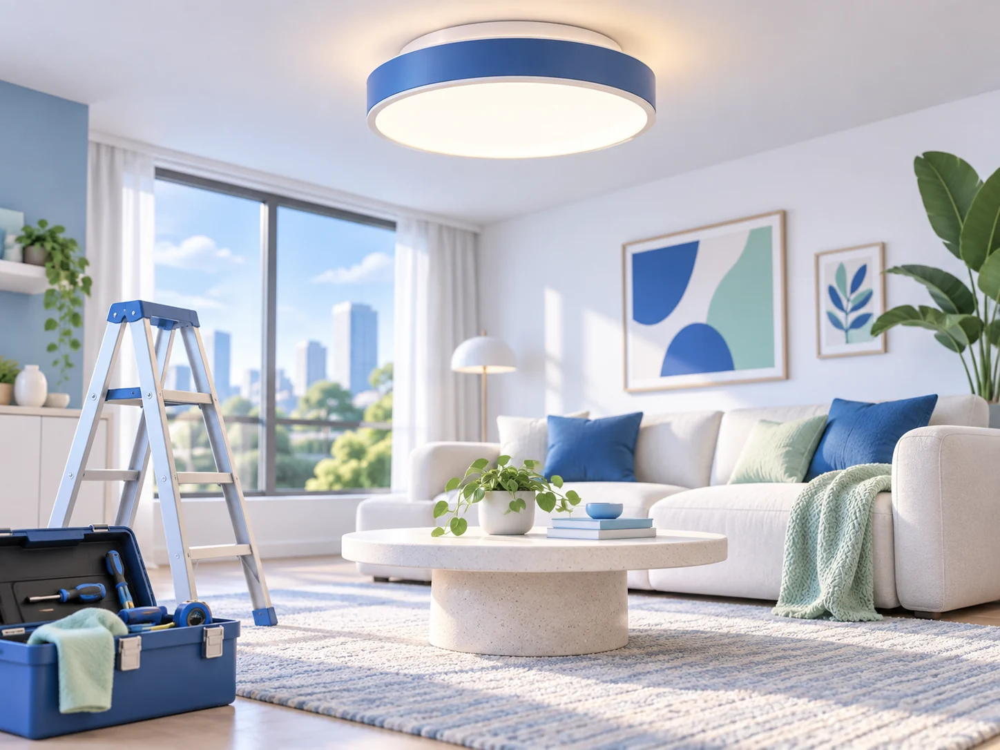

우리 동네 집수리 전문가를 바로 만나세요
타일 · 누수 · 하수구 · 페인트 · 목공 · 청소 · 에어컨 · 컴퓨터 수리까지
부산 지역의 집수리 분야를 둘러보세요. 첫 출시는 기술자 찾기와 전화 문의를 목표로 합니다. 현재 프로필은 화면 예시입니다.
현재 기술자 프로필은 화면 예시이며, 실제 전화 문의는 준비 중입니다.

어떤 도움이 필요하세요?
필요한 분야를 선택하면 관련 기술자를 볼 수 있어요.
부산 우리 동네 전문가
가까운 곳에서 활동하는 전문가를 찾아보세요.
아래 이름·경력·개인/업체 유형은 모두 가상 예시이며 실제 등록·사업자 인증 정보가 아닙니다. 첫 모집 지역과 분야도 아직 정해지지 않았습니다.
사진 수리 요청은 첫 출시에서 제공하지 않습니다. 고객 사진은 YESSURI에 접수하거나 저장하지 않습니다.
작업사례 미리보기
어떤 상황에서 무엇을 살펴보는지 예시로 확인해 보세요.

욕실 타일 보수 예시
가상 상황 · 실제 작업 아님

싱크대 배관 점검 예시
가상 상황 · 실제 작업 아님

실내 조명 교체 예시
가상 상황 · 실제 작업 아님
이미지와 설명은 생성된 예시입니다. 실제 완료 작업이나 고객 후기가 아닙니다.
YESSURI 시안 둘러보기
현재는 예시 프로필 검색과 상세정보 보기를 체험할 수 있습니다.
분야와 지역 선택하기
부산 지역과 수리 종류로 예시 프로필을 찾아보세요.
예시 프로필 살펴보기
개인/업체 유형과 분야를 구분해 볼 수 있습니다. 실제 기술자 정보는 아직 없습니다.
전화 문의 준비 중
첫 출시는 기술자에게 전화로 문의하는 방향입니다. 현재 예시 프로필에는 번호가 연결되지 않습니다.
안심하고 선택할 수 있도록
앞으로 YESSURI가 마련할 신뢰 기능입니다.
전화번호 인증
연락 가능한 번호인지 확인합니다.
사업자 인증
업체의 사업자 정보를 확인합니다.
실제 작업사진
완료한 작업을 사진으로 살펴봅니다.
실제 이용후기
이용 경험을 참고해 선택합니다.
신고 및 관리
문제를 신고하고 관리할 수 있습니다.
위 기능은 향후 제공 예정이며 현재 인증·후기·신고 시스템은 운영되지 않습니다.
우리 동네 고객을
YESSURI에서 만나보세요
기술자 등록은 무료로 시작할 예정입니다. 정식 등록 기능은 준비 중입니다.